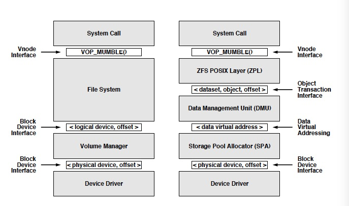
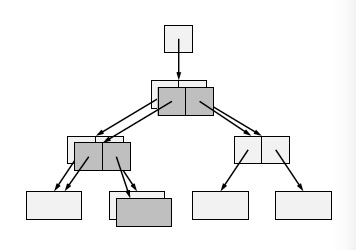

Zettabyte File System
A new file system with strong data integrity, simple administration and immense capacity.
Features
- redivision of labor between file system and volume manager
- pooled storage
- multiple file systems share a pool of storage devices
- decouple file systems from physical storage
- immense capacity
- 128-bit block addresses
- always consistent on-disk data
- transactional copy-on-write model
- data integrity
- checksum all on-disk data
Concepts
- On-disk data and metadata are stored in a tree of blocks rooted at uberblock. Data blocks are the leaves of the tree.
- Each block is checksummed before written to disk. The checksum is stored in the block's parent indirect block. Uberblock stores checksum in itself.
Implementation
 - SPA handles block allocation and I/O; exports virtually addressed, explicitly allocated and freed blocks to DMU - DMU turns virtually addressed blocks into transactional object interface - ZPL implements posix file system on DMU objects
SPA (Storage Pool Allocator)
- verify block checksum when reading and update when writing
- use slab allocator to prevent memory fragmentation (copy-on-write file system needs big contiguous chunks to write new blocks)
DMU (Data Management Unit)
- when a block is written, allocate a new block and copy modified content into the new block
- transaction is "rippling" copy-on-write from data block to uberblock
- group transactions together so uberblock and indirect blocks can be rewritten once for many data block writes

ZPL (ZFS Posix Layer)
- use intent log to avoid losing writes before system crashes